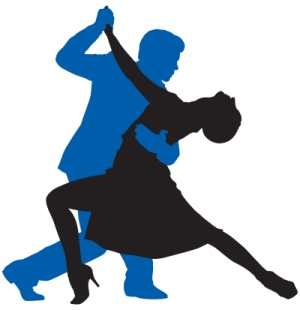
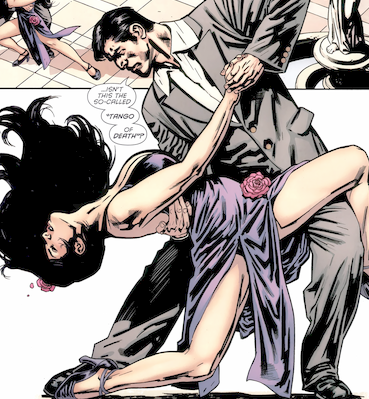
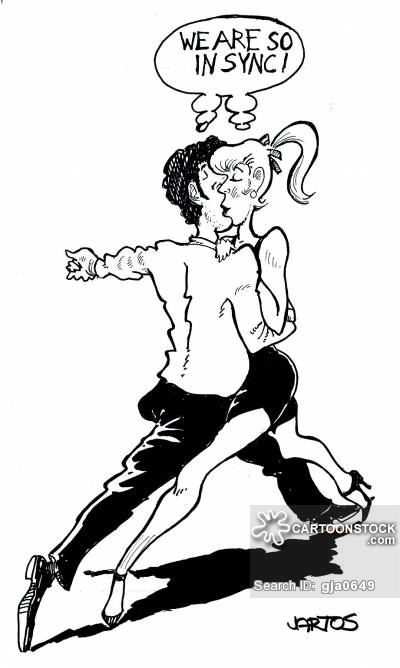
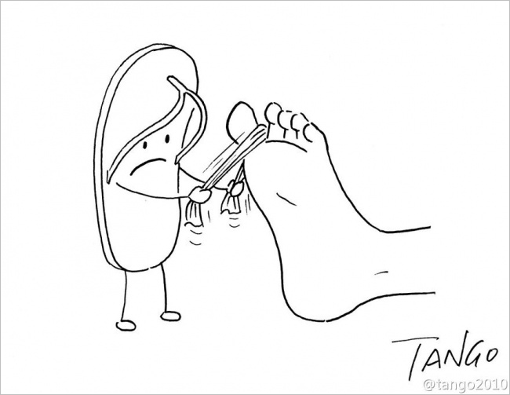
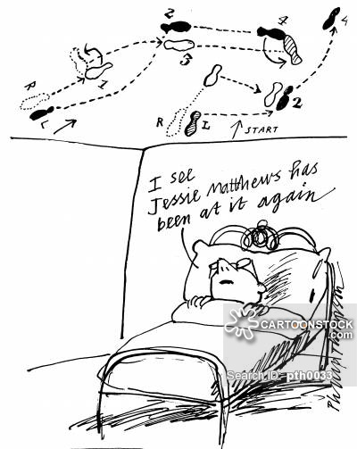
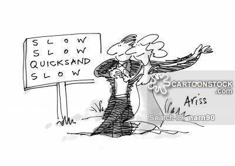
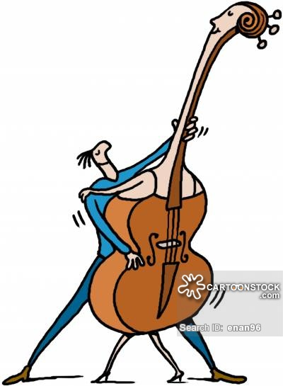

|
Tangoschuhe - Richtig schöne für Sie und Ihn: www.holga-dance.de - deutschsprachiger Ansprechpartner für Rummos Tanzschuhe www.nosolotango.de TangoMode - TangoSchuhe Tangomusik - Tanzbare zum üben & genießen: CD-Empfehlungen Über Tango Argentino: Die Geschichte des Tango Argentino Tango - der Tanz Unsere Partner: www.Tango-Passito.de - Saarlouis www.Tangohaus.de - Bad Dürkheim www.JuanTango.de - Saarbrücken www.ShowTango.de - Showtanz buchen IFK - Institut Für Körperschulung (Disziplinen wie: Taiji & Qigong & Yoga & Atem u.- Meditationstechniken und mehr...) IFK - Galerie IFK Blog Tango-Blog www.Tanztribüne.de - Karlsruhe www.Tangoshow.net - Buchen Sie leidenschaftlichen Tango Argentino Tanzvorführungen für alle Gelegenheiten wie z.B.: - Tango Dinnershow - Firmenjubiläum - Geburtstagsfeiern usw.... Tangoportale: www.Tangodanza.de- Europas größte Tangozeitschrift www.tangomarathons.com www.Tanzeninkarlsruhe.de- Tanzen in Karlsruhe www.elcorte.com- Nijmegen www.berlin.tango.info- Übersicht Berliner Tangoszene







|